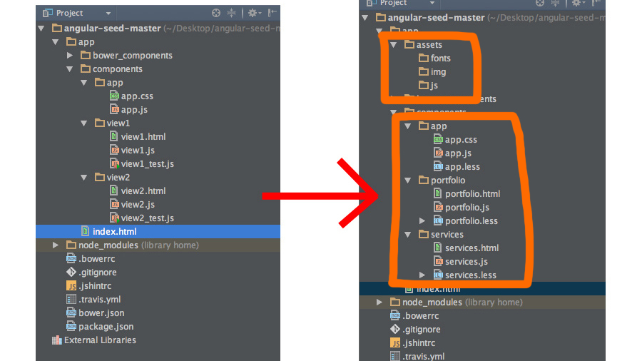

How to get headless?
with drupal7 & angular.js
By G-raph & Wouters_f
Today we'll talk about...
- The big picture
- What is JSON / REST / CORS
- How to create a JSON feed in Drupal 7
- How to setup a frontend with angular-seed
- How page transitions work
- Troubles in frontend paradise!
- Q&A
But first, let's introduce ourselves...

Frontender!

Gunter Gielen
Consulting Senior Frontend Dev
@g_raph_
gunter_gielen
Move on with the session, dude!
I want to learn something!
Drupal in the past

More and more

How is this achieved?
- presenting your data in the JSON format
- exposing it in a REST interface
- while not breaking CORS
JSON
"JavaScript Object Notation is a lightweight format that is used for data interchanging. It is based on a subset of JavaScript language (the way objects are built in JavaScript). As stated in the MDN, some JavaScript is not JSON, and some JSON is not JavaScript"
Wikipedia
Example Object
{
”string": ”value”,
”boolean": true,
”number": 123.45
}
Example Array
[0,1,2]
or
[{"name": "Fre"}, {"name": "Gunter"}]
Example Combination
{
"users": [
{
"firstName": "John",
"lastName": "Smith",
"address": {
"streetAddress": "21 2nd Street",
"city": "New York",
"state": "NY",
"postalCode": 10021
},
"phoneNumbers": [
"212 555-1234",
"646 555-4567"
]
}
]
}
Is this even about the frontend?
REST

Resource
- Any information that can be named is a Resource
- A resource can also be a collection of entities
Every resource has a unique identifier (URI)
http://dom.co/api/cities
http://dom.co/api/cities/unique_id
http://dom.co/api/cities/leuven
>
http://dom.co/api?typ=cities&name=leuven
Every resource has a representation, and may have multiple representations
yaml, Json, XML, html, pdf, png, ...
When to return text/html/JSON/yaml?
Content negotiation (HTTP: Accept header)
GET http://dom.co/cities
Accept: application/json, text/xml
DELETE
http://domain.com/api/cities/leuven
POST
http://domain.com/api/cities
{newcity}
GET
http://domain.com/api/cities/leuven
PUT
http://domain.com/api/cities/leuven
{updated}
CORS


CORS
"Cross-origin resource sharing (CORS) is a mechanism that allows restricted resources (e.g. fonts) on a web page to be requested from another domain outside the domain from which the resource originated"
Wikipedia
CORS
Allows servers to specify who/what can access your endpoint directly
How it works
-
Pre flight check
OPTIONS before POST
- Browser passes Origin header to server:
Origin: http://dom.co
- Server responds (header) saying what is allowed:
Access-Control-Allow-Origin: http://domain.com
Pre flight Check

Work, CORS dammit
header('Access-Control-Allow-Origin: *');
Allows any script to pull data from your server...
Better
header('Access-Control-Allow-Origin: http://dom.co');
Dude! Show me the Drupal thing!
How to create a JSON feed in Drupal 7
Usecase: g-raph.be/services

Usecase: g-raph.be/portfolio

1. download & install views datasource modules
2. activate the views_JSON module
3. create a new view || extend an existing view

4. add all the field you like
7. aaaaaanddddd....here it is!
Backend is boring, dude!
What's with the frontend?
How to setup a clean
frontend with angular-seed
1. download & install Angular Seed project
2. angular seed package

3. we only need to run bower install

4a. empty angular-seed out of the box

4b. empty angular-seed out of the box
5. rename the components / add some asset folders

7. app.js and $http request

8. console.log(data)

Hmmm... Interesting!
But not fancy enough for me!
I'll show you fancy!
watch this!
Hands on with page transitions
First thing to do: install ng-animate

Why ng-animate?
ng-animate provides support for:
- css based animations
- javascript based animations
must know!
How angular routing works
How angular routing works (A)

How angular routing works (B)

How angular routing works (C)
How angular routing works (D)
By knowing this, we can
pick-in with css! :)
simple css transition!

How cool is this!

Download animate.css @ github

Putting all this knowledge into a function
Putting all this knowledge into a function
Putting all this knowledge into a function
Putting all this knowledge into a function

Indexfile before function
Indexfile after function

Indexfile after function

Show me! Show me! Show me! Show me!
Troubles in frontend paradise
- Redirects
- Page not found
- Sitemap
- Opengraph
- Webforms
- ...
Redirects
.otherwise({
resolve: {
pageNotFoundAlias: pageNotFoundAliasResolver()
},
controller: 'Error404Controller',
template: 'templatehtml',
}
);
Redirects
.otherwise({
resolve: {
pageNotFoundAlias: pageNotFoundAliasResolver()
},
controller: 'Error404Controller',
template: 'templatehtml',
}
);
Fetches drupal redirects before controller is loaded
Redirects
.otherwise({
resolve: {
pageNotFoundAlias: pageNotFoundAliasResolver()
},
controller: 'Error404Controller',
template: 'templatehtml',
}
);
In the controller
- check the redirects or
- forward to Page not found
Redirects
You could also do this in your frontend php,
to not load all redirects into your frontend JS.
Page not found
This is a drupal setting.
So after checking redirects forward to this page.

Sitemap
We generate the sitemap (php)
It consumes the same api as our frontend.
Opengraph

Prerendering
Prerendering with https://prerender.io/
Crawls your pages and renders html
For google and facebook
This is da bomb!
prerender.io
“
You can not use this here”
They

prerender DIY

Webforms
Clients already know webforms and want it!
Just doesn't work.
- Iframe
- Proper fix
Iframe

Everithing works
Proper
Recreate every webform component as a angular directive
- You need a custom form submit handler
- You lose a lot, validation,error messages,...
- You lose a lot
But hey
Custom coding!

WANT
Someone please create a angular component that talks "drupal:webform".